| 日付 | 2020年11月1日（日） |
|---|---|
| 山域 | 丹沢 |
| メンバー | 家族（妻、長女・9歳、長男・7歳） |
| 山行形態 | 子連れ日帰り |
| アクセス | 車 |
| ルート (Map) | 道の駅清川 (8:02) - (10:56) 大山三峰山 (11:46) - (12:58) 不動尻 - (13:47) - 谷太郎沢林道終点 (13:47) - (14:43) 道の駅清川 |
先週は道の渋滞で大変な目にあったので、今週末は近場の山に行くことにする。
選んだのは丹沢の大山三峰山。痩せ尾根が連続する楽しい登山道のある山だ。
前から再訪したいとは思いつつ、なかなか行く機会が無くて、13年振りの訪問になる。
道の駅清川の駐車場に車を停める。標高140m。
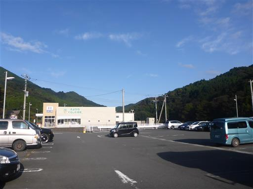
車道を歩いて登山口を目指す。
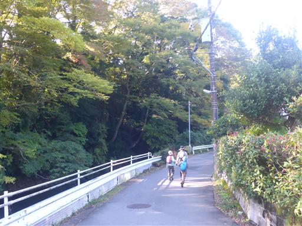
すぐに登山道に入る。樹林帯の中のよく整備された道だ。
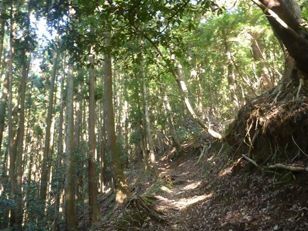
しばらく歩くと、経験者向きの登山道であるとの注意書き標識が現れる。
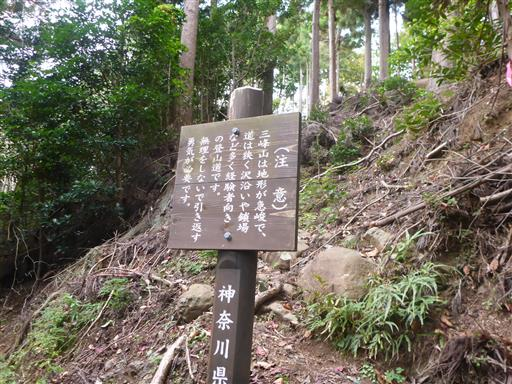
小さな祠。木に押されたからか階段が歪んでいる。
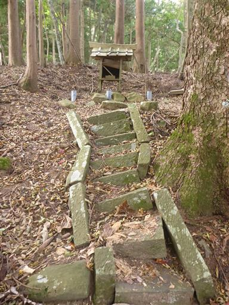
広い尾根。この辺りはまだ楽勝だ。
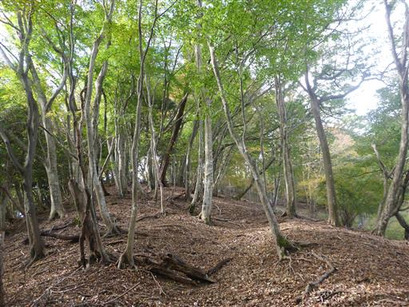
急斜面の階段道。案外きつい登りだ。
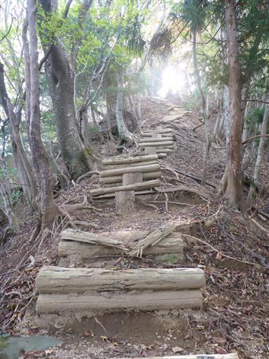
痩せ尾根が始まる。右側は崩落していて滑り台のような斜面だ。
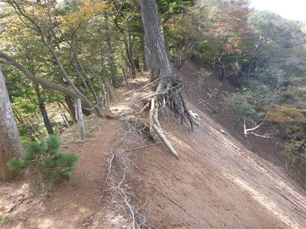
崩落地からは展望が広がる。中央に見えるのが丹沢山だ。
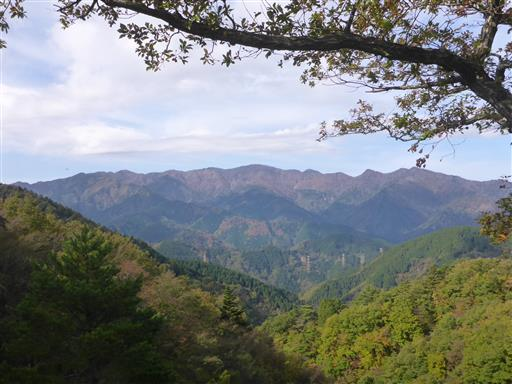
細い岩尾根を慎重に歩く。
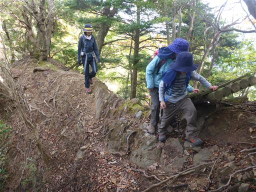
美しい紅葉。比較的標高の低い丹沢も秋が深まっている。
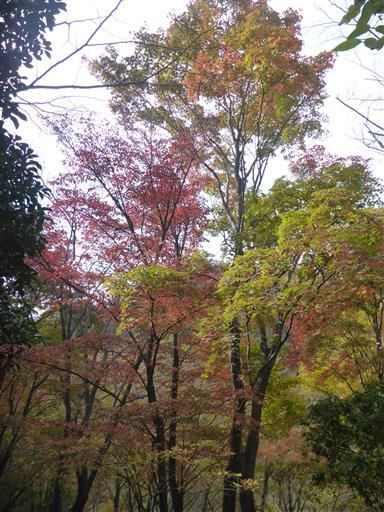
トラバース道も危なっかしい道が続く。
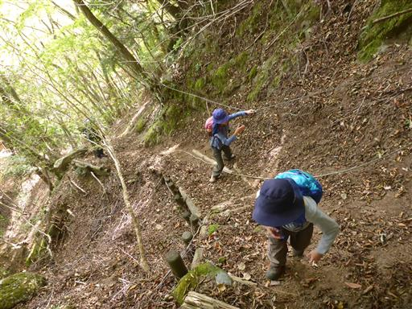
鎖場。
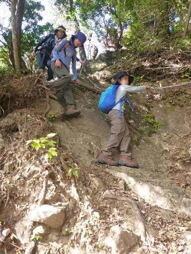
梯子。
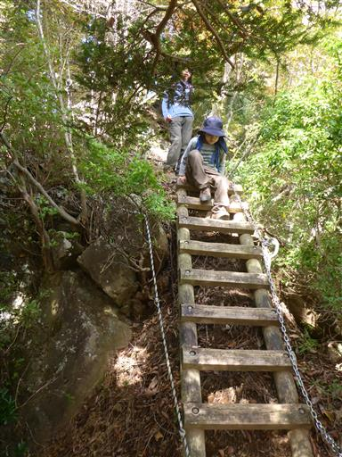
木の根でできた痩せ尾根。木の根のみで支えているのだが、
崩壊は進んでおらず、13年前と全く同じ風景だ。
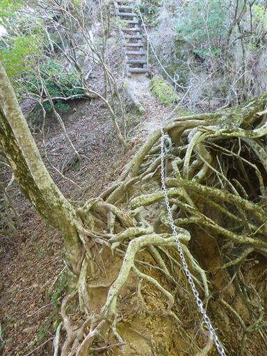
鎖をもって慎重に乗り越える。
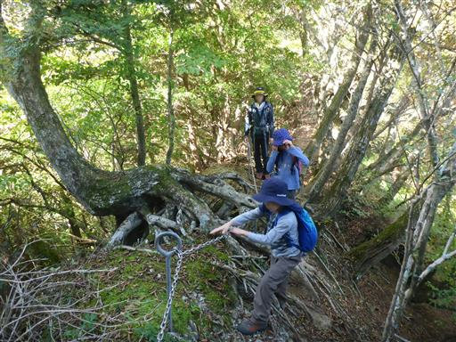
急峻な登りと下りを繰り返す。
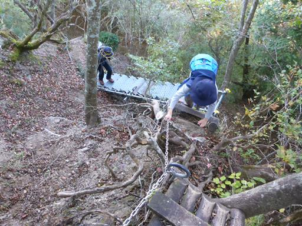
何度かのアップダウンを繰り返し、大山三峰山に到着する。標高935m。
この山は展望があまり開けないところが残念なところだ。
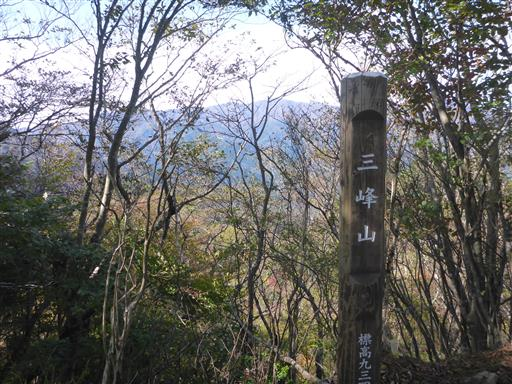
今回は周回コースを歩くため、下山道は別コースだ。
下山道にも少し鎖場がある。
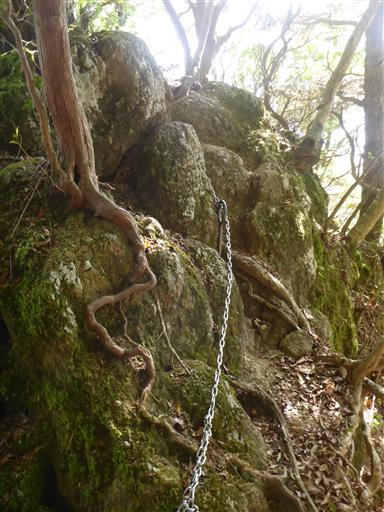
急斜面を下る。
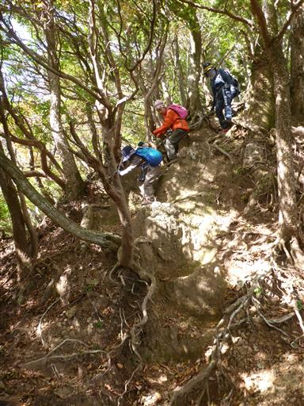
急な坂を下り切ったらようやく落ち着いた尾根道になる。
この辺りも紅葉がきれいだ。
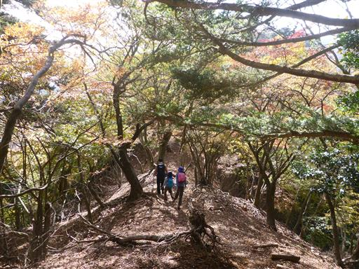
沢沿いの道まで下りてくる。
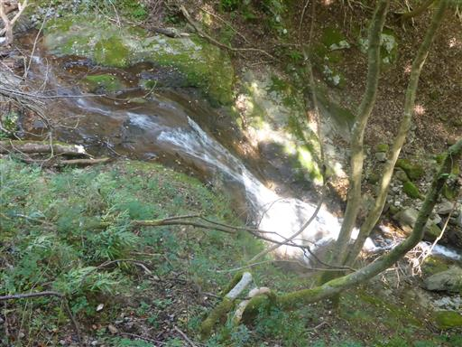
渡渉個所。側に流された橋が横たわっているが使い物にならない。
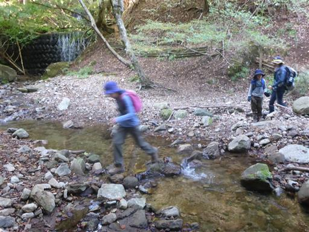
再び鎖場。
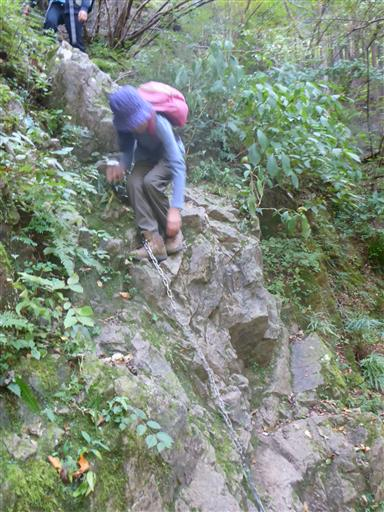
沢沿いの道を下って行く。
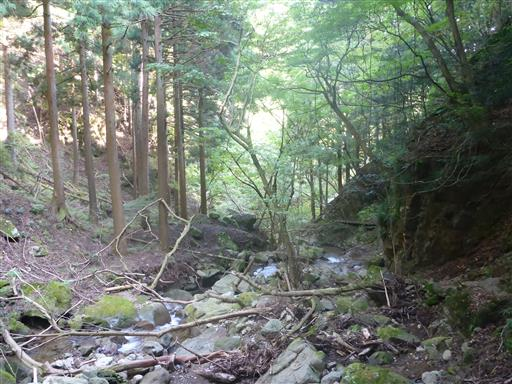
不動尻に下山。林道の終点だ。
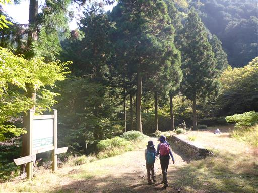
側を流れる沢は美しい。
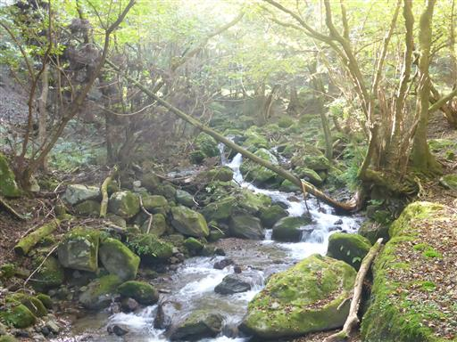
橋が一部崩落していて車両通行止になっている。
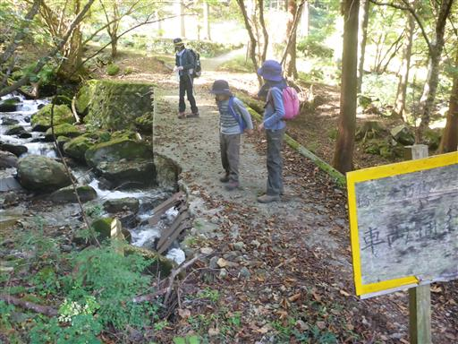
その後の林道でもかなり道が荒れており、そもそも不動尻まで車で辿り着くのは不可能だ。
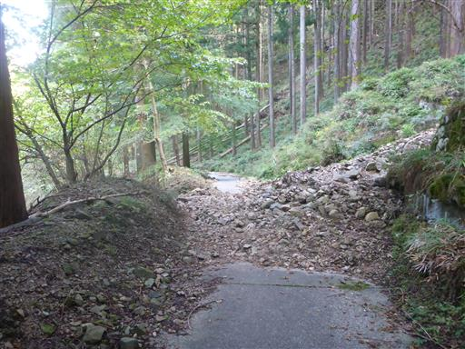
以前はこのまま広沢寺温泉に下山したのだが、今回は車を停めた煤ヶ谷まで戻る必要がある。
林道を離れて再び登山道に入って行く。
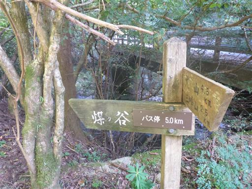
右側は崖で結構高度感のある危険な道だ。
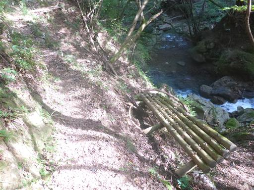
何度か橋で沢を渡りながら下って行く。
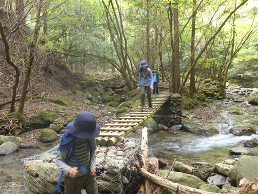
もう1つの林道終点に到着。ここから45分ほど車道歩きだ。
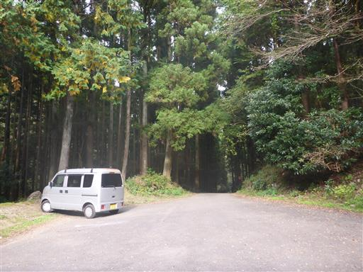
側を流れる川は谷太郎沢という名で、マス釣り場がある。
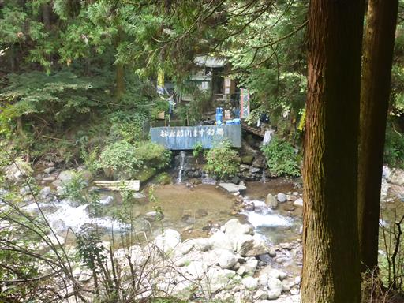
車や人が一杯で思いの外賑わっている。
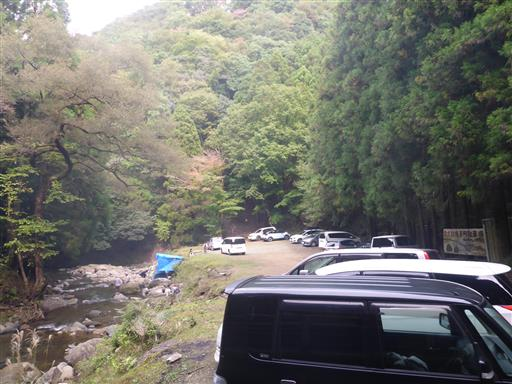
無事、道の駅清川に戻ってくる。駐車場は8割程度埋まっている。
道の駅で買い物をして帰宅する。
大山三峰山は13年前のままの姿で、昔と同じ楽しい登山道だった。
展望が無いのは残念だが、家から近いので定期的に訪れたい山だ。
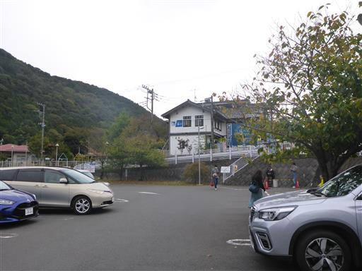